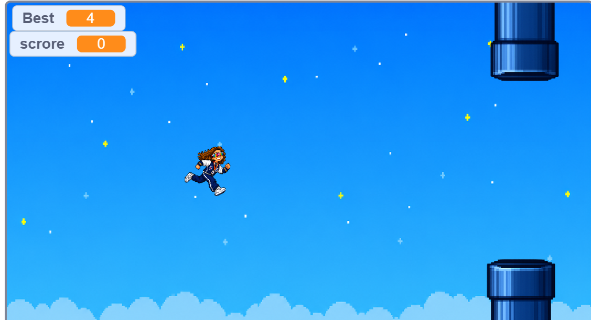
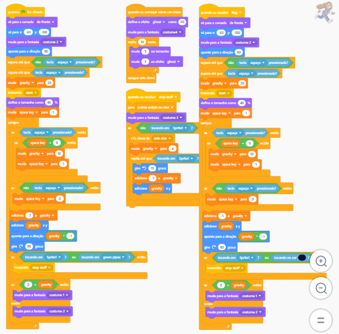
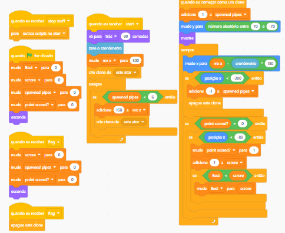
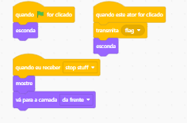

Agora, no segundo trimestre, fizemos um jogo no site do Scratch.
No começo foi meio complicado, porque tivemos que aprender a mexer em várias coisas e programar o jogo, mas no final conseguimos fazer dar certo.
Nosso jogo é parecido com o Flappy Bird. As principais diferenças são o personagem, que no nosso jogo não é um pássaro, e sim a professora Carol, de Português. Além disso, em vez dos famosos tubos verdes, eu fiz os tubos na cor azul, para deixar o jogo com um visual diferente.

-->
-->
-->
-->